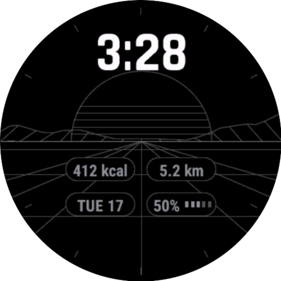

Watch faces
One look on two platforms: Wear OS in Watch Face Format, and Garmin Connect IQ. Every face has an always-on variant that keeps the lit area small, so AMOLED screens stay safe.
SynthWave



SynthWave for Wear OS
A watch face in Watch Face Format with two looks, Flat and Mountains at dusk. Light on the battery, with a true always-on mode.
SynthWave for Garmin
The same watch face for Connect IQ, with an AMOLED-safe always-on mode.